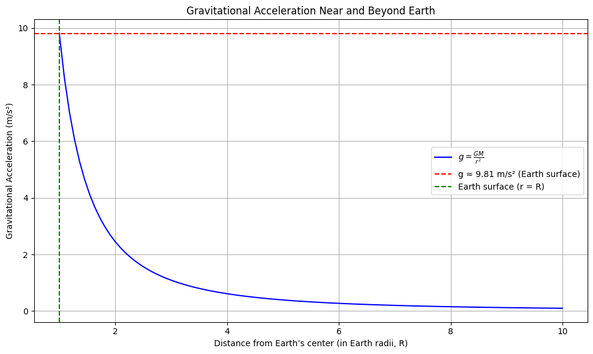
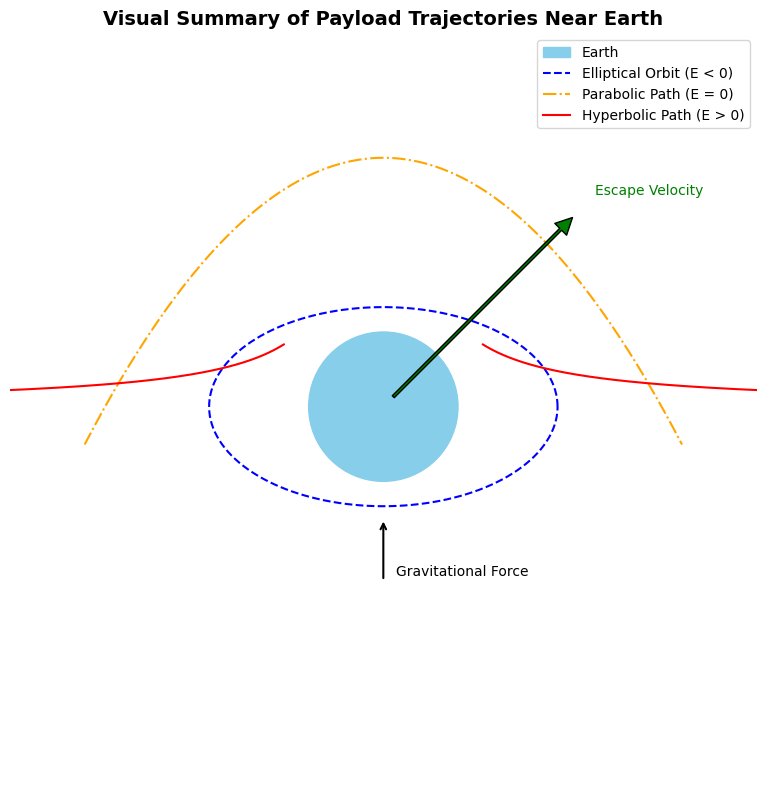
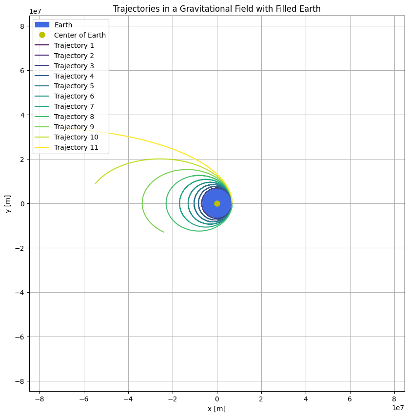

🚀 Trajectories of a Freely Released Payload Near Earth
🔵 Newton’s Law of Universal Gravitation
Newton's law defines the gravitational force between two masses:
- F: Gravitational force
- G: Gravitational constant (\(6.674 \times 10^{-11} \, \text{Nm}^2/\text{kg}^2\))
- m₁, m₂: Masses of the two objects
- r: Distance between the centers of the two masses
Newton's Law of Universal Gravitation describes how to calculate the gravitational force between two objects based on their masses and the distance between them.
🔵 Gravitational Acceleration Near Earth
Near Earth's surface, gravitational acceleration is approximately constant, and this formula illustrates how it's calculated using Earth's mass, radius, and the universal gravitational constant:
- g: Gravitational acceleration (\(\approx 9.81 \, \text{m/s}^2\))
- M: Mass of Earth
- R: Radius of Earth

🔵 Orbital Trajectories
The path of a payload depends on its total mechanical energy. There are three primary types of trajectories:
1. Elliptical Orbit:
- Total energy is negative (\(E < 0\))
- The object remains in a closed orbit around Earth
- This is typical for satellites
2. Parabolic Trajectory:
- Total energy is zero (\(E = 0\))
- The object moves at exactly the escape velocity
- This is the boundary between bounded and unbounded motion
3. Hyperbolic Trajectory:
- Total energy is positive (\(E > 0\))
- The object escapes Earth’s gravity completely
- This occurs in interplanetary or interstellar missions

🔵 Total Mechanical Energy of the Payload
The type of trajectory is determined by the total mechanical energy:
- E: Total mechanical energy
- v: Initial velocity of the object
- r: Distance from Earth's center

🔵 Escape Velocity
The minimum velocity required for an object to escape Earth's gravitational field:
- At Earth's surface: \(v_e \approx 11.2 \, \text{km/s}\)
If the object's velocity exceeds this value, the trajectory becomes hyperbolic.